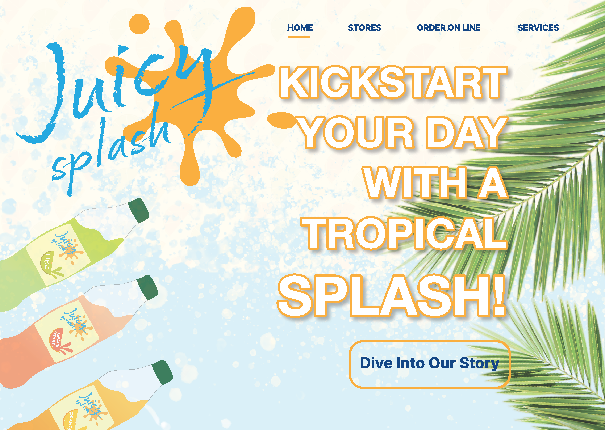

Advertising Design | Individual Project
Client: Communication Arts Technology Program (CATP)
School: Jefferson Community and Technical College, Louisville, KY
Expected Completion: 2024
Theme Colors: Red and White (based on official logo)
Design a visually compelling Annual Report that highlights the mission, accomplishments, and future goals of the Communication Arts Technology Program. The report aims to engage and inform a wide audience—taxpayers, administrators, students, and potential grant partners—while promoting continued support through scholarships and funding.
This project represents my ability to combine design, communication, and research into a unified visual narrative.
Label Cool lime
Label Grapefruit
Label Sweet Orange
Magazine Ad
Web Site Design
POP Display
Client: Conceptual Brand / Re-design
Course: Advertising Design
Year: 2025
This individual project required creating an original or re-designed product identity for a physical item of significant size. The branding system had to include packaging, a point-of-purchase display, and a magazine ad.